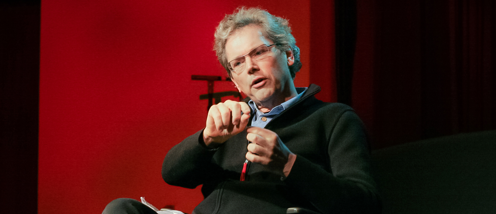
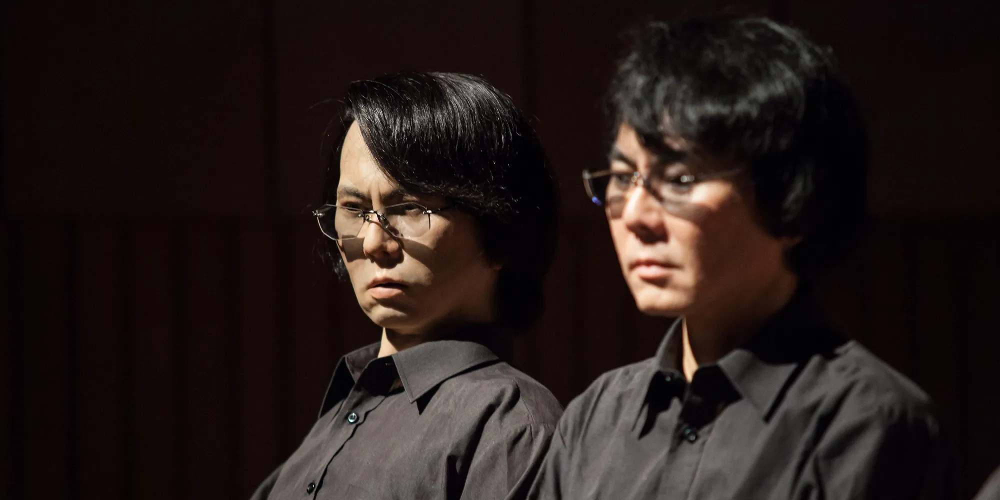
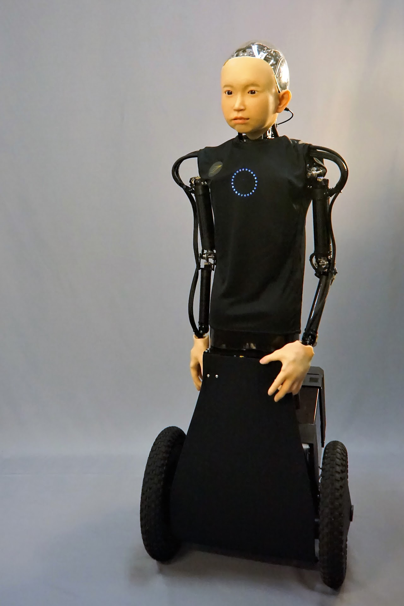
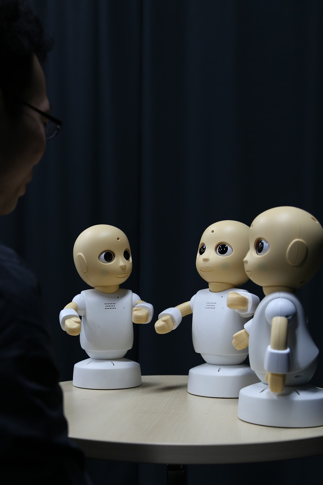
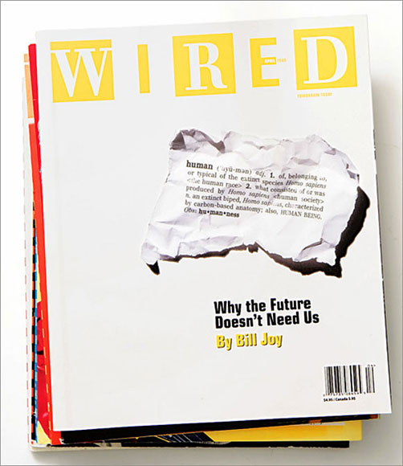
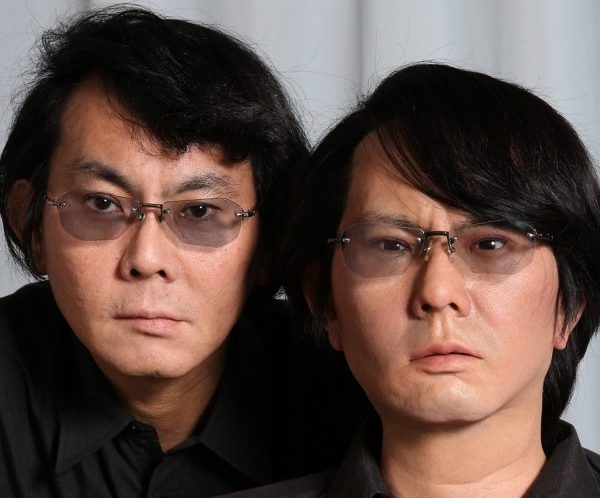
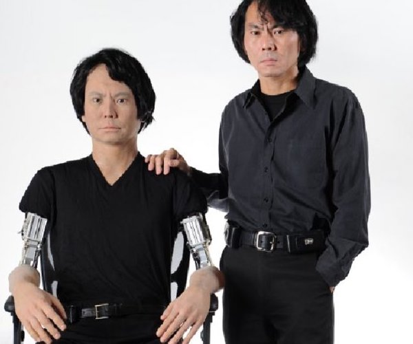

Why the future doesn´t need us?
Artículo
Reseñas

Bill Joy
William Nelson Joy, considerado uno de los mejores desarrolladores de la historia de la computación, nació el 8 de noviembre de 1954 en Michigan, Estados Unidos.
Desde pequeño el autor se interesó en la ciencia y en buscarle una respuesta a todas sus preguntas. Debido a su motivación por aprender y sus tempranos inicios en la lectura y los estudios, entró antes a la escuela e incluso adelantó un curso.
En su adolescencia, se interesó aún más por la ciencia, particularmente por la tecnología, y desarrolló admiración por operadores de radio y telescopios. Bill Joy realizó su educación superior en “University of Michigan”, sobresaliendo en matemáticas.
Fue en esta universidad que encontró la fascinación por los computadores y por los programas que podían resolver problemas matemáticos e indicar si había cometido algún error. En poco tiempo, consiguió un trabajo programando.
En 1982, junto a Scott McNealy, Andreas Betcholsheim y Vinod Kolsha, co-fundó Sun Microsystems (Stanford University Network), donde comercializaron una computadora de escritorio.
Esta fue una gran oportunidad para él y logró tener un gran éxito. Si bien la computadora no era tan rápida, era bastante económica y estaba bien construida.
TEDTALK Bill Joy

Hiroshi
Ishiguro
“Mi principal interés no es desarrollar robots, sino entender la mente humana y por qué los fenómenos emocionales aparecen en la sociedad. Yo estoy bastante interesado en los humanos, no en los robots.”
-Hiroshi Ishiguro para la revista Digital
Today Software Magazine.
El Dr. Hiroshi Ishiguro es Director del Laboratorio de Robótica Inteligente, parte del Departamento de Innovación de Sistemas en la Escuela de Graduados de Ciencias de la Ingeniería de la Universidad de Osaka, Japón.
La visión y objetivo de ”Intelligent robotics laboratory” de la Universidad de Osaka es que al interactuar con los robots, las personas pueden establecer comunicaciones no verbales con los sistemas artificiales. El propósito del robot es existir como un acompañante y tener valiosas interacciones con las personas.
"Nuestro objetivo es desarrollar tecnologías para las infraestructuras de información de la nueva generación basadas en una visión Computacional, Robótica y de Inteligencia Artificial”.
Algunos proyectos



Ibuki
Commu
Erica
Androide que parece un niño, equipado con una unidad de movimiento. Se pretende que este robot al interactuar y conversar con humanos pueda establecer una relación más profunda.
Además es capaz de expresar emociones, gestos y expresiones faciales.
Robots que pretenden ser un puente de comunicación entre las personas dentro del espectro autista y sus cuidadores.
Desarrollada para una plataforma de investigación del robot conversacional autónomo que puede comunicarse con las personas de diversas maneras, como la voz, los gestos corporales, las expresiones faciales, el contacto visual y el tacto.
Ver más sobre Hiroshi Ishiguro
Resumen paper

En este paper, el autor plantea que los humanos nos enfrentamos ante una posible competencia con los robots inteligentes debido al gran avance tecnológico. Tecnologías como la robótica, la ingeniería genética y la nanotecnología si bien nos permiten alargar nuestra esperanza de vida, también tienen un lado negativo en la que pueden generar daños a nuestra sociedad. A diferencia de otras tecnologías, estas son mucho más accesibles para los humanos.
El autor plantea que a medida que el tiempo avanza, la sociedad se enfrenta cada vez con más y más problemas. A su vez, las tecnologías se vuelven cada vez más inteligentes, por lo que los humanos las utilizan a su favor y permiten que tomen decisiones por ellos. Confían y afirman que les brindarán mejores soluciones, generando dependencia en ellas.
Desde el punto de vista social, el autor plantea que el poder estaría concentrado en las elites. Ellos serían quienes manejan a las masas y quienes están a cargo de los grandes sistemas de máquinas, llegando incluso a controlar el nivel de población en el mundo.

Proyecto escogido
GEMINOID
Sus proyectos con humanoides nacen de su interés por saber qué son los humanos y qué nos hace humanos. Destacando que la apariencia y los movimientos del robot tendrán un rol importante en el resultado de como humanos y robots interactuarán entre sí.
Al crear Geminoid Ishiguro escuchaba que muchos decían que se parecía y movía como él, más este no se percibía a sí mismo en este humanoide, llegando a la conclusión de que los humanos realmente no se conocen a sí mismos.

Las proyecciones que tiene este autor del progreso en la robótica e inteligencia artificial es generar humanoides más autónomos con intenciones y deseos. Estos mismos podrían generar cambios en nuestra sociedad pues al avanzar la tecnología, deben avanzar las normas que permitan que seres humanos y máquinas puedan coexistir para mantener una estabilidad.
Este proyecto, plantea la relación y conexión que se puede establecer entre los humanos y los robots y cómo estos son vistos como un posible camino hacia el desarrollo. Busca comprender y representar al humano a través de los robots.

Ishiguro plantea una sociedad donde los humanos conviven con estos robots humanizados en una especie de “sociedad simbiótica”.
Hiroshi Ishiguro presenta una nueva forma de estructura sociocultural con su ideal de incorporar robots de tecnología inteligente en la vida diaria, transmitiéndoles nuestras propias características, valores y haciéndolos nuestros compañeros.

El proyecto escogido toca temas que también han sido desarrollados en el transcurso del curso, tales como la teoría sustantiva y la posible pérdida de protagonismo de los humanos por el progreso de la tecnología inteligente.
La teoría sustantiva hace referencia a la incorporación de valores que conforman un nuevo tipo de sistema cultural que reestructura el mundo social como un objeto de control. A partir de esto, asumir una nueva infraestructura tecnológica es asumir otra forma de vida.
Vinculación Crítica
Tanto el paper como el proyecto tratan sobre la tecnología y el futuro que nos espera con ella, cómo ésta va a ayudarnos y aportar, o perjudicarnos y llevarnos a la extinción.
Pero ¿Qué podría decir Bill Joy de este proyecto de Hiroshi Ishiguro?
A partir del análisis de la visión de ambos autores, se puede inferir que la opinión de Bill Joy sería contraria a lo que refieren los proyectos desarrollados por Hiroshi Ishiguro. La idea de que los robots sean casi indistinguibles de los humanos sería un punto clave para la posibilidad de ser superados por la tecnología.
Además, sabemos que Ishiguro busca con sus proyectos que en el futuro los humanos se relacionen cotidianamente con los robots.
Es necesario tomar conciencia de las perspectivas de ambos autores, pues sin lo visionario de personas como Ishiguro es posible que no se desarrollen nuevos avances, tanto tecnológicos, culturales, sociales e incluso políticos que podrían ayudar a la humanidad potenciando nuestras habilidades, entre otras cosas.
Pero también, se deben considerar las repercusiones que este desarrollo puede generar a largo plazo, tal como lo menciona Joy.
Considerar el daño causado por las cosas que producimos, es algo que está muy presente en el pensamiento y la educación de las nuevas generaciones. Esto antes no se consideraba o no se le tomaba el peso necesario, como fue el caso de la industrialización, que si bien trajo consigo avances en la tecnología y la calidad de vida, hoy vemos cómo esta ambición humana por el progreso ha ido repercutiendo.
Las nuevas tecnologías tienen un lado positivo, ya que nos permiten alargar nuestra esperanza de vida y solucionar de manera efectiva algunos de nuestros problemas, pero también un lado negativo relacionado a la “competencia” entre humanos y robots además de la dependencia a la ciencia, tecnología y robótica.